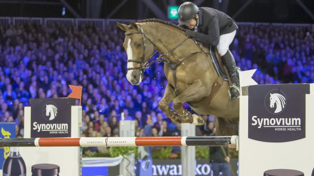

Toppaard Aquila
Het toppaard Aquila van de Nederlandse springruiter Wout-Jan van der Schans is bij de veiling van het Springpaarden Fonds Nederland (SFN) in handen gekomen van een Franse stal.
lees meer
Het toppaard Aquila van de Nederlandse springruiter Wout-Jan van der Schans is bij de veiling van het Springpaarden Fonds Nederland (SFN) in handen gekomen van een Franse stal.
Het Springpaarden Fonds Nederland (SFN) heeft het eigen toppaard Zenith woensdag op een online veiling zelf teruggekocht. Dit heeft de directie van de organisatie laten weten.
lees meerSpringruiter Gerco Schröder is buiten de Nederlandse equipe voor de Olympische Spelen gevallen. De 37-jarige Tukker gaat wel mee naar Rio de Janeiro, maar slechts als reserve.
Maikel van der Vleuten heeft zondag op de slotdag van Jumping Amsterdam de Grote Prijs gewonnen.